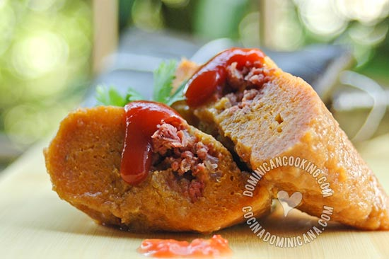

Estos deliciosos pasteles de diferentes víveres y rellenos de carne son uno de los platos más queridos de nuestra gastronomía y una tradición de fiestas y celebraciones, especialmente en la cena de navidad y año nuevo.
Los Pasteles en hoja llevan muchos ingredientes que aunque comunes en la República Dominicana, pudieran ser difíciles de encontrar en otro país.
Planea esta receta con antelación para darte tiempo de buscar todos los ingredientes necesarios. Si encuentras imposible conseguir hojas de plátano, no desesperes; puedes utilizar papel para pasteles en hoja como substituto.
¡Buen provecho!
Mofongo es un plato delicioso hecho a base de plátanos fritos, majados y a los que se agrega ajo y se majan hasta formar una bola y se sirve en un pilón (mortero), otro símbolo de la cocina dominicana.
El Mofongo tradicional se prepara con chicharrón (piel de cerdo crujiente), otras versiones son servidas en restaurantes del país y puede consumirse en el almuerzo, cena o como comida ligera para fiesteros trasnochados.
Mofongo, nunca debe confundirse con Mondongo, lo cual es un asunto delicado. Siempre tengo que pensar dos veces antes de decir la palabra, especialmente cuando ordeno en un restaurante, porque no sé lo que haría si un plato de entrañas aparece frente a mí. También voy a releer esta entrada para asegurarme de que no cometí este error.